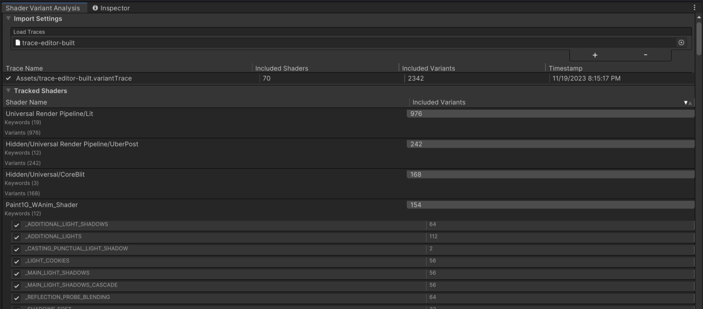

## Setup 1. Clone the package repository "https://github.com/eldnach/shader-variant-analysis" 2. In the Unity Editor, go to `Window > Package Manager` 3. In the top left of the Package Manager window, click on `+ > Add package from disk` 4. Add the package directory


About Me
Realtime graphics enthusiant, currently working as a Technical Product Manager for the Unity Engine.
In this blog, I share some useful tools and personal projects to assist with Unity and realtime graphics development.